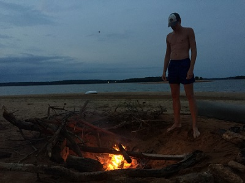
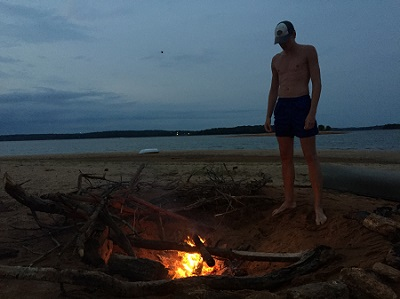

This summer was a blast! I did a ton of fun and cool stuff. I meet new friends and went to new places. There is no way I could share all of the cool things I did this summer but here are a few cool things that I got to do.
I went on a vacation with my mom to Maine. We flew into Portland and went deep sea fishing. We caught 12 massive 29" striped bass. After that we hiked around Acadia National Forest and did tons of other fun things. If you have never had a chance to go to Maine I suggest that you do.
I went to Paridise Falls this summer. It was awesome. The only problem was all the college kids that came. It got crowded. It was fine though because we were the only ones camping so we had the place to ourselves. Paradise falls is a massive waterfall with a pool of water in the bottom. It is deep enough to go cliff jumping. I loved spending time with my family in the outdoors.
 

Towards the end of the summer I went island camping at Lake Heartwell. We kayaked out to an island and spent two nights there. We did a ton of cool and stupid stuff like spikeball, build a fire, and went swimming. It was cool to just hang out with friends and not need to worry about school or chores. surprisingly we ate good food. I loved this trip and it was one of many highlites of my summer.
by: Colton,R